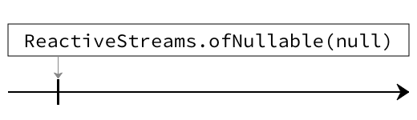
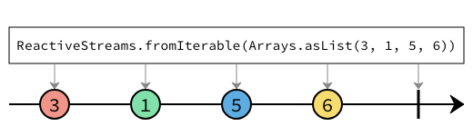
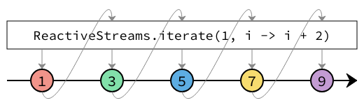
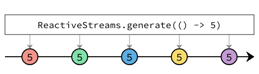
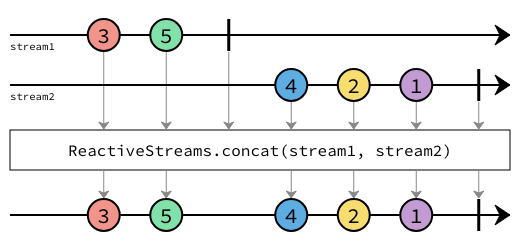
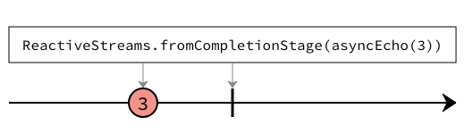
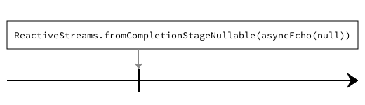
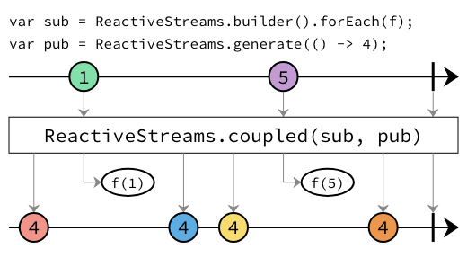

Interface ReactiveStreamsFactory
ReactiveStreams.-
Method Summary
Modifier and TypeMethodDescription<T> ProcessorBuilder<T,T> builder()Create aProcessorBuilder.<T> PublisherBuilder<T>concat(PublisherBuilder<? extends T> a, PublisherBuilder<? extends T> b) Concatenates two publishers.<T,R> ProcessorBuilder<T, R> coupled(SubscriberBuilder<? super T, ?> subscriber, PublisherBuilder<? extends R> publisher) <T,R> ProcessorBuilder<T, R> coupled(org.reactivestreams.Subscriber<? super T> subscriber, org.reactivestreams.Publisher<? extends R> publisher) <T> PublisherBuilder<T>empty()Create an emptyPublisherBuilder.<T> PublisherBuilder<T>Create a failedPublisherBuilder.<T> PublisherBuilder<T>fromCompletionStage(CompletionStage<? extends T> completionStage) Creates a publisher from aCompletionStage.<T> PublisherBuilder<T>fromCompletionStageNullable(CompletionStage<? extends T> completionStage) Creates a publisher from aCompletionStage.<T> PublisherBuilder<T>fromIterable(Iterable<? extends T> ts) Create aPublisherBuilderthat will emits the elements produced by the passed inIterable.<T,R> ProcessorBuilder<T, R> fromProcessor(org.reactivestreams.Processor<? super T, ? extends R> processor) Create aProcessorBuilderfrom the givenProcessor.<T> PublisherBuilder<T>fromPublisher(org.reactivestreams.Publisher<? extends T> publisher) Create aPublisherBuilderfrom the givenPublisher.<T> SubscriberBuilder<T,Void> fromSubscriber(org.reactivestreams.Subscriber<? super T> subscriber) Create aSubscriberBuilderfrom the givenSubscriber.<T> PublisherBuilder<T>Creates an infinite stream that emits elements supplied by the suppliers.<T> PublisherBuilder<T>iterate(T seed, UnaryOperator<T> f) Creates an infinite stream produced by the iterative application of the functionfto an initial elementseedconsisting ofseed,f(seed),f(f(seed)), etc.<T> PublisherBuilder<T>of(T t) Create aPublisherBuilderthat emits a single element.<T> PublisherBuilder<T>of(T... ts) Create aPublisherBuilderthat emits the given elements.<T> PublisherBuilder<T>ofNullable(T t) Create aPublisherBuilderthat will emit a single element iftis not null, otherwise will be empty.
-
Method Details
-
fromPublisher
Create aPublisherBuilderfrom the givenPublisher.- Type Parameters:
T- The type of the elements that the publisher produces.- Parameters:
publisher- The publisher to wrap.- Returns:
- A publisher builder that wraps the given publisher.
-
of
- Type Parameters:
T- The type of the element.- Parameters:
t- The element to emit.- Returns:
- A publisher builder that will emit the element.
-
of
- Type Parameters:
T- The type of the elements.- Parameters:
ts- The elements to emit.- Returns:
- A publisher builder that will emit the elements.
-
empty
- Type Parameters:
T- The type of the publisher builder.- Returns:
- A publisher builder that will just emit a completion signal.
-
ofNullable
Create aPublisherBuilderthat will emit a single element iftis not null, otherwise will be empty.
- Type Parameters:
T- The type of the element.- Parameters:
t- The element to emit,nullif to element should be emitted.- Returns:
- A publisher builder that optionally emits a single element.
-
fromIterable
Create aPublisherBuilderthat will emits the elements produced by the passed inIterable.
- Type Parameters:
T- The type of the elements.- Parameters:
ts- The elements to emit.- Returns:
- A publisher builder that emits the elements of the iterable.
-
failed
- Type Parameters:
T- The type of the publisher builder.- Parameters:
t- The error te emit.- Returns:
- A publisher builder that completes the stream with an error.
-
builder
- Type Parameters:
T- The type of elements that the processor consumes and emits.- Returns:
- The identity processor builder.
-
fromProcessor
<T,R> ProcessorBuilder<T,R> fromProcessor(org.reactivestreams.Processor<? super T, ? extends R> processor) Create aProcessorBuilderfrom the givenProcessor.- Type Parameters:
T- The type of the elements that the processor consumes.R- The type of the elements that the processor emits.- Parameters:
processor- The processor to be wrapped.- Returns:
- A processor builder that wraps the processor.
-
fromSubscriber
Create aSubscriberBuilderfrom the givenSubscriber. The subscriber can only be used to create a single subscriber builder.- Type Parameters:
T- The type of elements that the subscriber consumes.- Parameters:
subscriber- The subscriber to be wrapped.- Returns:
- A subscriber builder that wraps the subscriber.
-
iterate
Creates an infinite stream produced by the iterative application of the functionfto an initial elementseedconsisting ofseed,f(seed),f(f(seed)), etc.
- Type Parameters:
T- The type of stream elements.- Parameters:
seed- The initial element.f- A function applied to the previous element to produce the next element.- Returns:
- A publisher builder.
-
generate
Creates an infinite stream that emits elements supplied by the suppliers.
- Type Parameters:
T- The type of stream elements.- Parameters:
s- The supplier.- Returns:
- A publisher builder.
-
concat
Concatenates two publishers.
The resulting stream will be produced by subscribing to the first publisher, and emitting the elements it emits, until it emits a completion signal, at which point the second publisher will be subscribed to, and its elements will be emitted.
If the first publisher completes with an error signal, then the second publisher will be subscribed to but immediately cancelled, none of its elements will be emitted. This ensures that hot publishers are cleaned up. If downstream emits a cancellation signal before the first publisher finishes, it will be passed to both publishers.
- Type Parameters:
T- The type of stream elements.- Parameters:
a- The first publisher.b- The second publisher.- Returns:
- A publisher builder.
-
fromCompletionStage
Creates a publisher from aCompletionStage.
When the
CompletionStageis redeemed, the publisher will emit the redeemed element, and then signal completion. If the completion stage is redeemed withnull, the stream will be failed with aNullPointerException.If the
CompletionStageis completed with a failure, this failure will be propagated through the stream.- Type Parameters:
T- The type of theCompletionStagevalue.- Parameters:
completionStage- TheCompletionStageto create the publisher from.- Returns:
- A
PublisherBuilderrepresentation of thisCompletionStage.
-
fromCompletionStageNullable
Creates a publisher from aCompletionStage.
When the
CompletionStageis redeemed, the publisher will emit the redeemed element, and then signal completion. If the completion stage is redeemed withnull, the stream will be immediately completed with no element, ie, it will be an empty stream.If the
CompletionStageis completed with a failure, this failure will be propagated through the stream.- Type Parameters:
T- The type of theCompletionStagevalue.- Parameters:
completionStage- TheCompletionStageto create the publisher from.- Returns:
- A
PublisherBuilderrepresentation of thisCompletionStage.
-
coupled
<T,R> ProcessorBuilder<T,R> coupled(SubscriberBuilder<? super T, ?> subscriber, PublisherBuilder<? extends R> publisher) Creates aProcessorBuilderby coupling aSubscriberBuilderto aPublisherBuilder.
The resulting processor sends all the elements received to the passed in subscriber, and emits all the elements received from the passed in publisher.
In addition, the lifecycles of the subscriber and publisher are coupled, such that if one terminates or receives a termination signal, the other will be terminated. Below is a table of what signals are emited when:
Lifecycle signal propagation Returned ProcessorBuilder inlet Passed in SubscriberBuilder Passed in PublisherBuilder Returned ProcessorBuilder outlet Cause: complete from upstream Effect: complete Effect: cancel Effect: complete Cause: error from upstream Effect: error Effect: cancel Effect: error Effect: cancel Cause: cancels Effect: cancel Effect: complete Effect: cancel Effect: complete Cause: completes Effect: complete Effect: cancel Effect: error Cause: errors Effect: error Effect: cancel Effect: complete Effect: cancel Cause: cancel from downstream - Type Parameters:
T- The type of elements received.R- The type of elements emitted.- Parameters:
subscriber- The subscriber builder to wrap.publisher- The publisher builder to wrap.- Returns:
- The coupled processor builder.
-
coupled
<T,R> ProcessorBuilder<T,R> coupled(org.reactivestreams.Subscriber<? super T> subscriber, org.reactivestreams.Publisher<? extends R> publisher) Creates aProcessorBuilderby coupling aSubscriberto aPublisher.The resulting processor sends all the elements received to the passed in subscriber, and emits all the elements received from the passed in publisher.
In addition, the lifecycles of the subscriber and publisher are coupled, such that if one terminates or receives a termination signal, the other will be terminated. Below is a table of what signals are emited when:
Lifecycle signal propagation Returned ProcessorBuilder inlet Passed in SubscriberBuilder Passed in PublisherBuilder Returned ProcessorBuilder outlet Cause: complete from upstream Effect: complete Effect: cancel Effect: complete Cause: error from upstream Effect: error Effect: cancel Effect: error Effect: cancel Cause: cancels Effect: cancel Effect: complete Effect: cancel Effect: complete Cause: completes Effect: complete Effect: cancel Effect: error Cause: errors Effect: error Effect: cancel Effect: complete Effect: cancel Cause: cancel from downstream - Type Parameters:
T- The type of elements received.R- The type of elements emitted.- Parameters:
subscriber- The subscriber builder to wrap.publisher- The publisher builder to wrap.- Returns:
- The coupled processor builder.
- See Also:
-